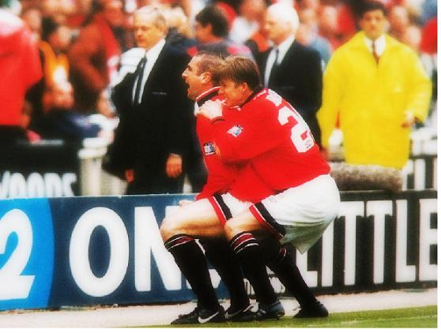
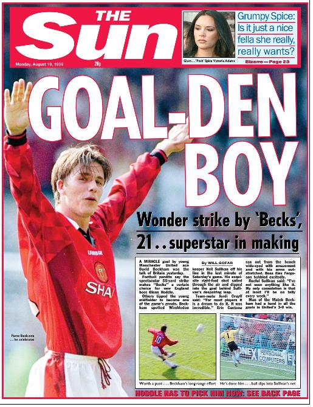

Chương Năm

“ồng hoa đại chiến” rốt cuộc là trận cầu buồn tẻ, kết thúc với tỷ số hòa không bàn thắng. David Beckham thể hiện phong độ chấp nhận được, không chói sáng, cũng không quá tệ. Anh kiến tạo được một cơ hội tốt cho Ryan Giggs, song cú volley của tiền vệ ngựời xứ Wales bị thủ thành Leeds cản phá thành công.
Qua những cuộc “lửa thử vàng”, Sir Alex Ferguson nhận thấy đã có thể đặt niềm tin vào “Thế Hệ 92”. Do đó, khi mùa bóng 1995 - 1996 bắt đầu, ông tự tin để ba trụ cột Andrei Kanchelskis, Paul Ince, và Mark Hughes ra đi mà không mua một ngôi sao nào để thay chân. Nỗi băn khoăn duy nhất của Sir Alex chính là Beckham. So với các bạn đồng lứa, David chưa được Sir tin tưởng hoàn toàn. Trong khi Scholes, Butt, và Gary Neville đều chơi hằng 20 – 30 trận mùa 94 – 95, David bị dạt sang Preston North End, chỉ đá cho United tổng cộng 10 lần. Đã toan tính mua Darren Anderton hoặc Marc Overmars, nhưng rồi Sir nghĩ lại, trao cho David một cơ hội.
Việc Mark Hughes ra đi là nỗi thất vọng lớn của David. Trước lúc mùa giải khởi tranh, các cầu thủ trẻ ai cũng trông đợi Sir Alex bổ sung lực lượng. Đến lúc trận đấu mở màn gặp Aston Villa sắp diễn ra, họ mới dám tin thầy đã đặt trọn hy vọng vào mình. Beckham, Scholes, Butt, O’Kane, và anh em Neville đều được sử dụng trong trận này. Hy vọng tưởng trao nhầm chỗ, bởi Villa giã cho United ba trái, trước khi David gỡ lại một bàn danh dự vào phút 84. Xem xong trận, bình luận viên danh tiếng Alan Hansen phán một câu xanh rờn: “Toàn nhóc con mà thắng nỗi gì!”
Bị chạm nọc, bọn "nhóc con" chơi như lên đồng, thắng liền 5 trận kế tiếp, trong đó có trận hạ đương kim vô địch Blackburn ngay trên sân khách bằng bàn thắng quyết định từ cú sút xa của Beckham. Từ tháng 10, 1995, với sự trở lại của Eric Cantona sau án treo giò, United đá càng hứng khởi, quyết liệt đeo bám Newcastle trên bảng tổng sắp. Mùa giáng sinh, Quỷ Đỏ còn kém Newcastle 12 điểm, đến tháng 3, 1996, họ đã vượt lên dẫn đầu. Trong trận đấu áp chót mùa giải, Beckham tỏa sáng, lập cú đúp, giúp đội nhà đè bẹp Nottingham Forest 5 – 0. United thắng nốt Middlesbrough ở trận cuối cùng, lên ngôi vô địch với 4 điểm nhiều hơn Newcastle.
Trong các danh hiệu quốc nội, VĐQG hiển nhiên là danh giá nhất, song đối với cầu thủ trẻ như David Beckham, các giải cúp lại hấp dẫn hơn. Giải vô địch cứ chán chán thế nào, hết trận này lại đến trận khác, không có loại trực tiếp, sao bằng các cúp đầy những cao trào, xong tứ kết lại đến bán kết, chung kết? Từ ngày còn nhỏ, David có thói quen: Hễ United vào đến chung kết một cúp nào, là đem cờ đỏ và poster hình Bryan Robson treo lên cửa sổ phòng mình. Được ra sân trong trận chung kết Cúp FA, với David luôn là một giấc mơ cháy bỏng.
United không gặp mấy khó khăn trong hành trình FA năm đó, cho đến trận bán kết. Gặp đối thủ cứng cựa Chelsea, đội lại thiếu vắng cặp trung vệ trụ cột Bruce-Pallister do chấn thương. Dẫn dắt hàng công Chelsea, trớ trêu thay, chính là Mark Hughes. Phút 35, đích thân Hughes đột phá dũng mãnh, vượt qua Beckham, tạt bóng cho Ruud Gullit đánh đầu phá thế quân bình. Nhưng Chelsea có Hughes thì United có Cantona. Đầu hiệp 2, tiền đạo người Pháp trổ tài kiến tạo, giúp Andy Cole gỡ hòa. Chỉ bốn phút sau bàn gỡ, tiền vệ Craig Burley của Chelsea bất cẩn phá bóng ngay vào đường chạy của Beckham. David xâm nhập vòng cấm địa, nhẹ nhàng dứt điểm tréo giò thủ môn, ấn định tỷ số 2 – 1.
Bóng vừa chạm lưới, trong niềm vui tột độ, David chạy băng về phía trước, nhảy lên không trung, tay giơ cao đấm lên trời. Nước mắt anh rưng rưng chực trào: Chẳng còn là mơ, mà sự thực là đây. Chính anh, chính David Beckham, đã lập công, nâng bước Manchester United vào chung kết.

David Beckham và Eric Cantona (Ảnh: Twicsy)
Đối thủ của United trong trận cầu đỉnh cao là đại kình “bất cộng đái thiên” Liverpool. Cuộc chiến bình thường giữa hai Quỷ Đỏ cũng đủ căng thẳng, huống hồ là chung kết FA. Vì quá căng thẳng, cầu thủ hai bên chơi như đeo chì vào chân, lăm lăm lo đá người hơn đá bóng. Thời gian dần trôi, không bàn thắng nào được ghi. Phút 85, Sir Alex Ferguson đang chuẩn bị thay Beckham thì United được hưởng phạt góc. David tiến về góc sân, đặt bóng xuống, bên tai anh chợt vẳng tiếng một cổ động viên trên khán đài:
-Cố lên! David! Cố lên!
Như được tiếp thêm tinh thần, David hít một hơi dài, rồi câu bổng bóng vào vòng 5m50. Thủ thành David James xông ra, đấm bóng đúng tầm chân của…Eric Cantona. Cantona điềm tĩnh tung cú volley cháy lưới Liverpool. United trở thành CLB đầu tiên trong lịch sử bóng đá Anh 2 lần giành cú đúp quốc nội…
Mùa 95 – 96 thật sự đánh dấu bước đổi đời của David Beckham. Không sở hữu tốc độ và kỹ thuật của Andrei Kanchelskis, song với phong cách đĩnh đạc, chắc chắn, và những đường chuyền chuẩn xác chết người, David đã hoàn thành xuất sắc nhiệm vụ thay thế tiền vệ người Nga bên cánh phải Manchester United. Từ một cầu thủ dự bị, anh nay đá chính thường xuyên, ra sân tổng cộng 40 lần, ghi 8 bàn trên tất cả các mặt trận, một con số không hề tồi với một cầu thủ tuyến hai. Mỗi khi bước ra đường, David bắt đầu được mọi người nhận ra, và xin chữ ký. Nhà tài trợ bắt đầu tìm đến David. Hãng giày Cica ký hợp đồng, nhờ anh quảng cáo sản phẩm với giá 6 000 bảng. Ngày càng nhiều cô gái say mê Beckham. Trong số những bạn gái thoáng qua của David trong thời gian này có thể kể Leoni Marzell, Anna Bartley, và Julie Killilea. Tuy vậy, khi kể chuyện tình yêu, David chỉ nhắc đến một cô gái có tên Helen, coi cô là người yêu chính thức thứ nhì của mình, sau Deana.
Old Trafford có chính sách “xe công vụ”: Hễ cầu thủ nào khoác áo đội một ít nhất 20 lần, sẽ được cấp một chiếc xe hơi. Với 40 lần riêng trong mùa vừa qua, David đủ chuẩn nhận chiếc Honda Prelude. Đương nhiên, David đã có xe riêng từ lâu. “Xế hộp” đầu tiên của anh là chiếc Ford Escort màu đỏ, mua lại của Ryan Giggs với giá 6 000 bảng. Sau này, để lấy le với bạn gái Deana, anh còn mua thêm chiếc VW Golf cáu cạnh. Dù vậy, David không khỏi xúc động bên chiếc Prelude. Anh coi nó là thành quả những đóng góp của mình cho CLB, nên o bế nó cực kỳ.
Bình thường chẳng ai phí tiền đi tân trang xe công, vì cuối cùng, đằng nào cũng phải trả xe về cho đơn vị chủ quản. Nhưng quá yêu chiếc Prelude, David không nề gì phí tổn. Anh bỏ tiền túi thay bánh xe mới, lắp thêm dàn máy nghe nhạc, và bọc da toàn bộ hệ thống ghế. Chiếc xe được David bảo quản cẩn thận, “nâng như trứng mỏng”, đến độ có lần đồng đội David May xin quá giang, anh không cho, sợ May làm xước lớp da ghế!
Có xe thì phải có nhà. Đã trưởng thành, trong túi cũng đã rủng rỉnh tiền, David từ giã vợ chồng Kay, đi mua nhà riêng: Một căn nhà bốn phòng ngủ, có vườn rộng rãi, ngay sát nhà Ryan Giggs. Cũng như với xe hơi, David thiết kế lại nội thất nhà theo ý mình. Anh cho xây một lò sưởi lớn, sắm bàn đánh bi da, đồng thời cho lắp hệ thống truyền hình và âm thanh tân kỳ nhất. Trong phòng riêng, anh bảo thợ gắn cái TV vào giường ngủ, khi muốn xem chỉ cần bấm nút, TV sẽ từ…dưới giường chui ra!
Có tiền trong tay, ai cũng muốn tiền mẹ đẻ tiền con. David nhận thấy mình cần một người đại diện, lo liệu những vấn đề về tài chính. Anh ký hợp đồng với Tony Stephens, người đồng thời đang đại diện cho siêu sao Alan Shearer. Thêm vào đó, anh lập hẳn một công ty riêng để quản lý các giao dịch tài chính cho mình. Đối với các ngôi sao bóng đá, việc thành lập công ty như thế là thường, nhưng với David, một cầu thủ mới nổi và chưa có nhiều nhà tài trợ, thì là khác thường. Điều này cho thấy tầm nhìn xa, cũng như đầu óc nhạy bén kinh doanh của David.
Biết được việc David ký hợp đồng với Tony Stephens, Sir Alex Ferguson giận lắm:
-Con cần người đại diện để làm gì? Chẳng phải CLB luôn chăm lo cho quyền lợi của con sao?
Sir Alex thuộc về thế hệ trước, ông muốn cầu thủ luôn phải tận tâm cống hiến, hơn là thuê người đại diện về để “cò kè bớt một thêm hai” với CLB. Ở Old Trafford, Sir thương nhất Paul Scholes. Tính tính trầm lắng, không thích se sua tiền bạc, cả đời Scholes không hề có người đại diện. Anh chỉ có tình yêu bất tận với bóng đá và Manchester United, còn lương bổng chỉ là thứ yếu. Mỗi khi hợp đồng cũ gần hết hạn, CLB gửi tới hợp đồng mới, anh cầm bút ký ngay, không cần đọc xem trong đó ghi những gì. Song Paul Scholes là “thánh nhân” trong làng bóng đá, ngàn người mới có một, không phải ai cũng là Scholes. Đối với đa số cầu thủ, trong đó có David Beckham, bóng tròn là đam mê đã đành, nhưng cũng là phương tiện kinh doanh để phục vụ cho đời sống vật chất nữa…
Sau kỳ nghỉ hè ở đảo Sardinia, nơi chẳng có gì để làm ngoài ngủ, bơi, tắm nắng, và…ăn pasta, David trở về Old Trafford chuẩn bị cho mùa giải mới. Trong trận mở màn gặp Wimbledon, anh ghi bàn thắng để đời, như ta đã đề cập ở phần mở đầu. Khi David co chân chuẩn bị sút, chẳng ai nghĩ bóng sẽ vào lưới. Trên băng ghế huấn luyện, Sir Alex cằn nhằn “Nó định làm cái gì đây?”, còn trên khán đài, ông Ted cũng lo thầm “Sút không vào thì thành trò hề!”
Nhưng phần còn lại đã trở thành lịch sử. Bàn thắng được chiếu đi chiếu lại trên truyền hình, và các bình luận viên dùng tất cả những lời có cánh ngợi khen nó. Tuy vậy, với David, lời khen có ý nghĩa nhất đến từ Eric Cantona. Tan trận, trong phòng thay đồ, Cantona tiến tới bắt tay đàn em. “Bàn thắng đẹp lắm!”, ông nói. Vỏn vẹn thế thôi, mà quý giá vô ngần, bởi Cantona trước nay hầu như không khen ai. Về phần Sir Alex, ông cũng mừng cho David. Song le, muốn học trò phải tỉnh táo, không được tự mãn, ông cấm David không được trả lời phỏng vấn bất kỳ báo nào về bàn thắng kinh điển anh vừa ghi.
Dù David có trả lời phỏng vấn hay không, tên tuổi anh chỉ qua một đêm đã vụt sáng. David Beckham từ nay không còn là cầu thủ triển vọng, mà đã chính thức bước vào hàng ngũ các ngôi sao. HLV tuyển Anh, Glen Hoddle, ngay lập tức điền tên anh vào danh sách chuẩn bị cho trận vòng loại World Cup với Moldova. Ngày 1 tháng 9, năm 1996, trong trận Anh thắng Moldova 3 – 0, Beckham trở thành tuyển thủ quốc gia.

Beckham lên trang bìa tờ The Sun sau bàn thắng vào lưới Wimbledon. Ảnh nhỏ phía trên là Victoria Adams. Một sự trùng hợp, hay điềm báo cho một mối tình? (Ảnh: Thesun)